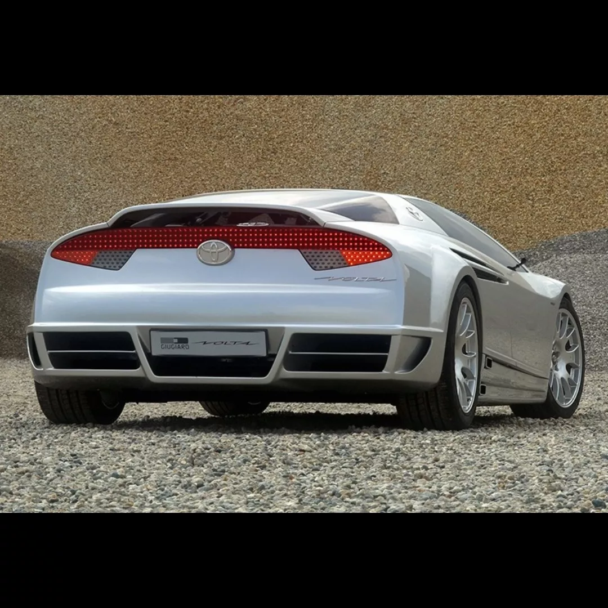
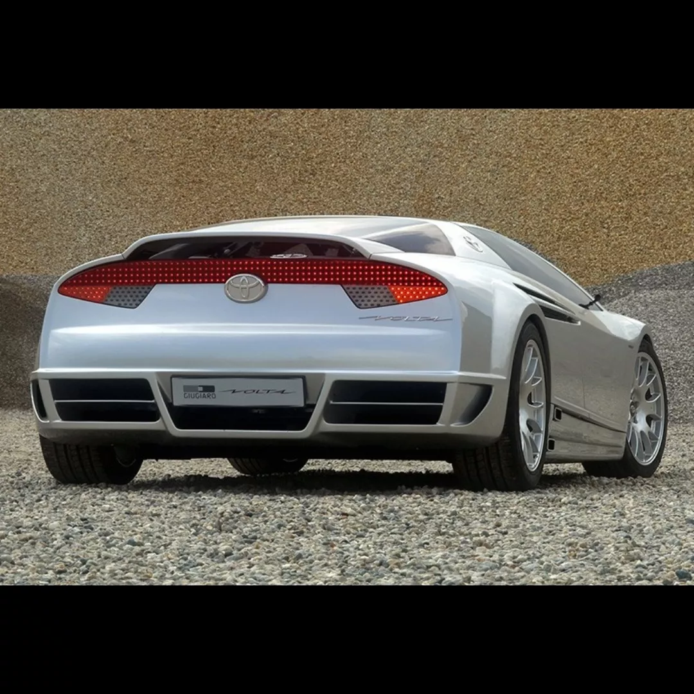

Velocidad máxima: 250km/h(limitado)
0-100 km/h: 4s
Potencia máxima: 408cv
Longitud: 4,35m
Anchura: 1,92m
Altura: 1,14m
Batalla: ?
Peso: 1250kg
Presentado en el Salón de Ginebra de 2004, Toyota eligió como homenaje el nombre del científico italiano que investigó
el almacenamiento de la energía e inventó la pila eléctrica y dejó el diseño a cargo de Italdesign y Giugiaro.
El chasis era de fibra de carbono y los retrovisores eran cámaras pequeñas. Las puertas tenían el sistema
de apertura de alas de gaviota, las cuatro salidas de escape estaban ubicadas en los laterales del coche, mientras
que sus llantas eran unas deportivas BBS de 19 pulgadas.
Este deportivo podía transformarse en un triplaza y tanto el volante como los pedales se podían desplazar hacia arriba, abajo, izquierda o
derecha, posibilitando que cualquiera de los tres ocupantes pudiese conducirlo.
Era híbrido, poseía un motor gasolero V6 de 3,3 litros ubicado en el eje trasero procediente del Lexus RX400h, pero
con más potencia y en su modo 100% eléctrico llegaba a los 30km/h de máxima. Nunca llegó a producción.